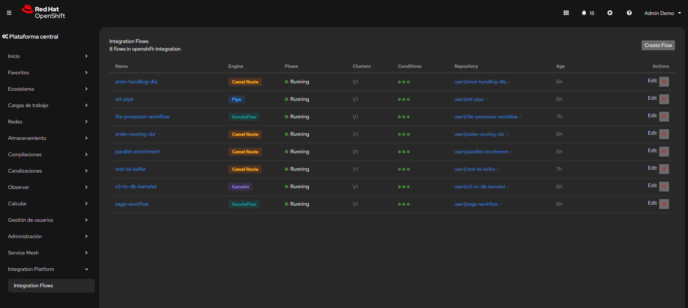
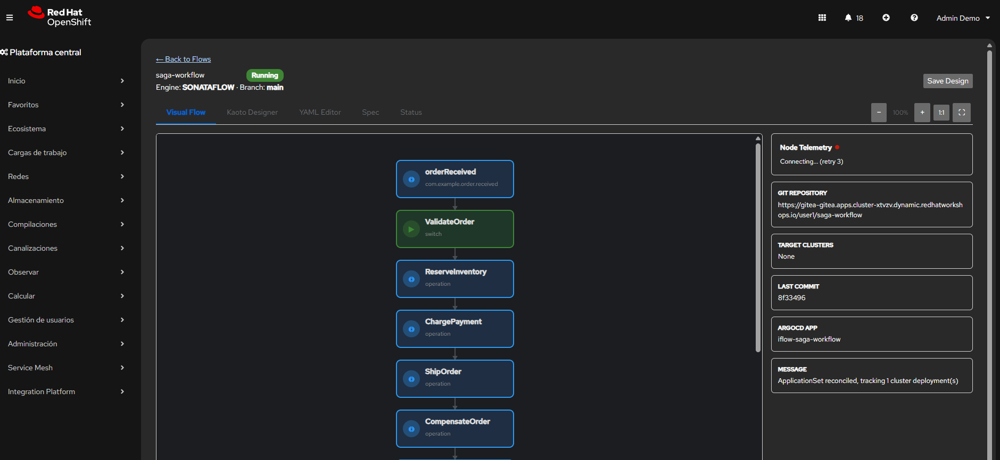
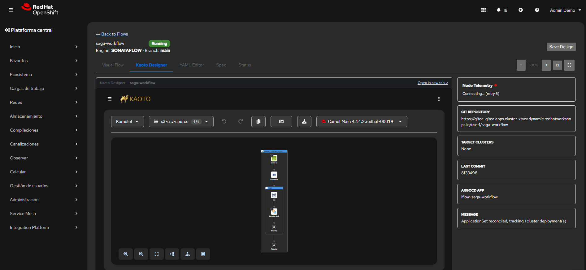
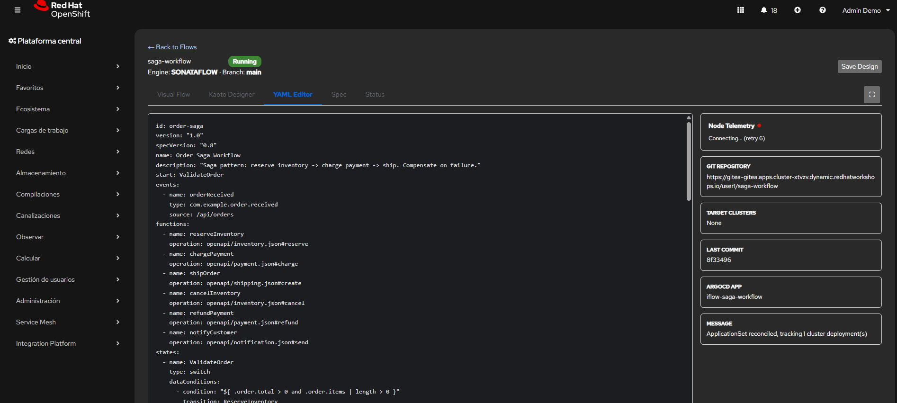
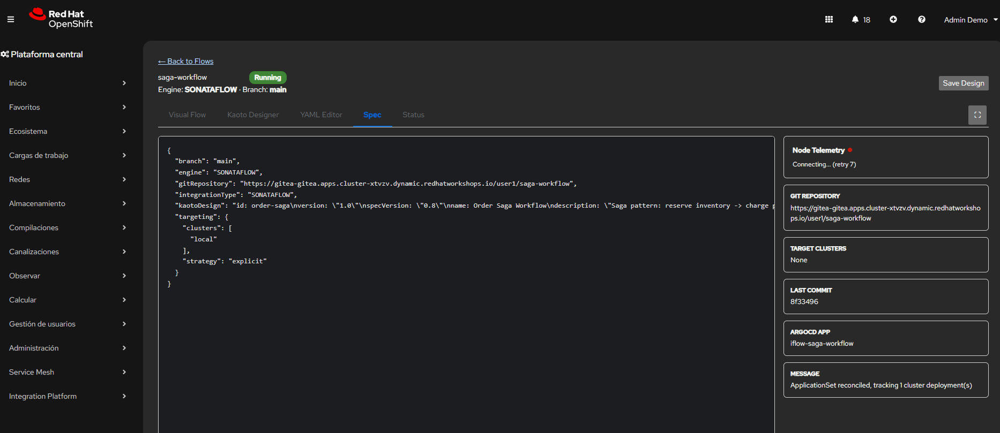
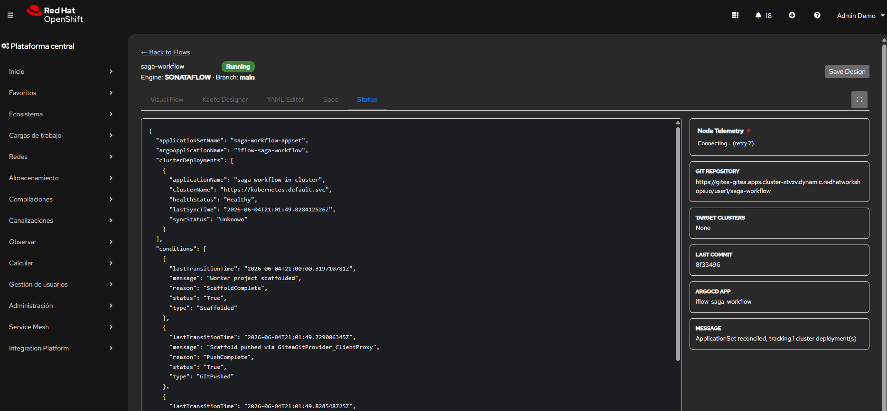
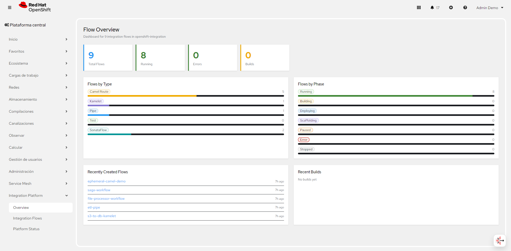
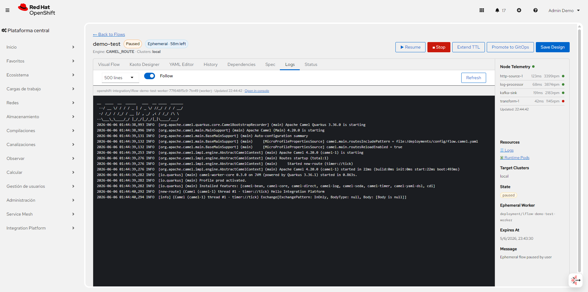
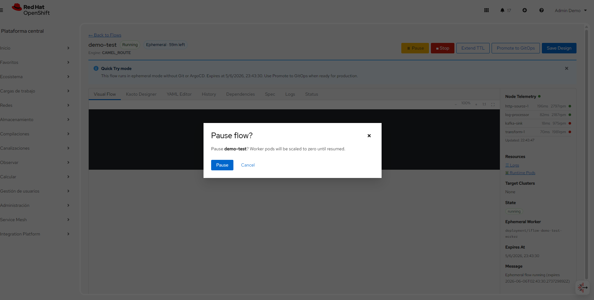

Five Integration Types
Run Camel Routes, Kamelets, Pipes, Tests, or SonataFlow workflows from a single IntegrationFlow CR.
Real-Time Integration & Orchestration Platform for OpenShift
Open-source alternative to n8n, powered by Apache Camel + CNCF SonataFlow, with visual Kaoto designer, MCP/AI integration, and native Kubernetes orchestration.
Everything you need to design, deploy, and observe integration workflows on OpenShift.
Run Camel Routes, Kamelets, Pipes, Tests, or SonataFlow workflows from a single IntegrationFlow CR.
Deploy and test flows in minutes without Git, Tekton, or ArgoCD. Configurable TTL, extend, and promote to GitOps when ready.
Embedded Kaoto canvas + SVG flow visualizer with branching logic and click-to-YAML navigation.
Browse 200+ ready flows from the console create form — search, filter by category, and deploy in one click.
Scaffold to Git → Tekton builds Quarkus workers → Argo CD syncs base/ manifests. Eight catalog examples in k8s/examples/.
Model Context Protocol bridge for discovering and invoking AI tools in flows.
OpenTelemetry + OTel Collector with real-time SSE telemetry for canvas node coloring.
HPA v2-driven worker pods scale on CPU and memory utilization.
Search, filter, paginate flows. Direct links to Pods, Tekton Pipelines, and ArgoCD apps.
Target multiple clusters from a single IntegrationFlow spec via ArgoCD ApplicationSets.
Install the operator with Helm in under a minute.
# Add the Helm repository
helm repo add integration-platform \
https://maximilianopizarro.github.io/openshift-integration-operator/
helm repo update
# Install the operator
helm install integration-operator \
integration-platform/openshift-integration-operator \
--namespace openshift-integration \
--create-namespace
# Verify the deployment
oc get pods -n openshift-integration
oc get crd integrationflows.platform.ioSee the full Quick Start Guide for all 9 IntegrationFlow examples (including ephemeral Quick Try), embedded flow logs, and console plugin access. Browse the 255 Examples Catalog covering 310 Apache Camel Quarkus components across 15 categories.
Integration Platform embedded in the OpenShift Console — manage flows, monitor services, and design workflows visually.









Deploy integration flows instantly — no Git, no CI pipeline. Just paste your Camel YAML and run.
Set deploymentMode: EPHEMERAL in your IntegrationFlow CR and the operator deploys a worker pod immediately. Configurable TTL with auto-cleanup.
The default camel-worker-full image ships with 80+ precompiled Camel Quarkus extensions — no build step required.
When your flow is ready, promote it with one click. The operator scaffolds a Git repo, triggers Tekton, and ArgoCD takes over.
All images are published to Quay.io and auto-selected based on detected Camel components.
# Default (all domains — 80+ extensions)
quay.io/maximilianopizarro/camel-worker-full:v0.3.0
# Domain-specific (smaller, faster startup)
quay.io/maximilianopizarro/camel-worker-core:v0.3.0 # timer, log, direct, seda, bean
quay.io/maximilianopizarro/camel-worker-messaging:v0.3.0 # kafka, amqp, jms, mqtt, nats
quay.io/maximilianopizarro/camel-worker-http:v0.3.0 # platform-http, rest, graphql, grpc
quay.io/maximilianopizarro/camel-worker-data:v0.3.0 # sql, jdbc, mongodb, file, ftp
quay.io/maximilianopizarro/camel-worker-cloud:v0.3.0 # aws2-s3/sqs/sns, azure, google
quay.io/maximilianopizarro/camel-worker-ai:v0.3.0 # langchain4j-chat, djl
Core & EIP: timer, log, direct, seda, bean, mock, quartz, cron, exec, controlbus, scheduler
Messaging: kafka, amqp, jms, activemq, mqtt5, nats, pulsar, stomp, sjms2, azure-servicebus, google-pubsub, knative
HTTP/API: platform-http, http, rest, rest-openapi, vertx-http, netty-http, graphql, grpc, websocket, coap
Data: sql, jdbc, mongodb, cassandra, couchdb, infinispan, redis, elasticsearch, solr, minio, file, ftp
Cloud: aws2-s3/sqs/sns/ddb/lambda/kinesis/ses/bedrock, azure-blob/cosmos/eventhubs, google-storage/bigquery/pubsub
AI/ML: langchain4j-chat, djl
SaaS: debezium-mysql/postgres/mongodb, salesforce, slack, telegram, mail, git, github, jira, ssh, hashicorp-vault
Healthcare/IoT: fhir, hl7, mllp, snmp
Transform: jackson, jsonpath, jaxb, csv, xslt, jolt, jslt, freemarker, mustache, velocity, flatpack, tika
Resilience: microprofile-fault-tolerance, microprofile-health, micrometer, opentelemetry
A Kubernetes-native platform that connects visual design, GitOps, and runtime observability.